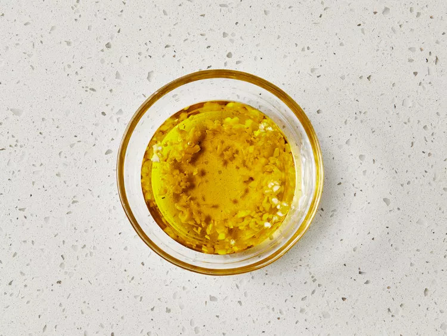

Grilled Pizza

Description
Grilling pizza is an excellent way to enjoy homemade pizza with a crispy crust and perfectly melted toppings.
The intense heat of a hot grill closely mimics that of a professional pizza oven, allowing you to achieve that sought-after charred flavor and texture.
Our recipe will guide you through the steps to make and grill pizza from scratch, ensuring a delicious result every time.
Whether you're a fan of classic Margherita or love experimenting with bold and unique toppings, this method is versatile enough to accommodate all your culinary desires.
One key tip when grilling pizza is to be mindful of the toppings.
While it might be tempting to load up your pizza with an abundance of ingredients, a lighter touch is often better.
Too many toppings can weigh down the dough and prevent it from cooking evenly. By keeping it simple and balanced, you’ll ensure a perfectly cooked pizza with a delightful balance of flavors.
So fire up the grill, gather your favorite ingredients, and get ready to enjoy a delightful pizza experience right in your backyard!
Ingredients
Pizza Dough:
- 1 cup warm water (110 degrees F/45 degrees C)
- 1 (.25 ounce) package active dry yeast
- 1 pinch white sugar
- 3 ⅓ cups all-purpose flour
- 1 tablespoon olive oil
- 2 teaspoons kosher salt
- 2 cloves garlic, minced
- 1 tablespoon chopped fresh basil
Garlic Oil:
- ½ cup olive oil
- 1 teaspoon minced garlic
Pizza Toppings:
- ¼ cup tomato sauce, divided
- 1 cup chopped tomatoes, divided
- ¼ cup sliced black olives, divided
- ¼ cup roasted red peppers, drained and chopped, divided
- 2 cups shredded mozzarella cheese, divided
- 4 tablespoons chopped fresh basil, divided
Directions:
- Gather all ingredients.
- Make dough: Pour warm water into a large bowl; dissolve yeast and sugar in warm water. Let stand until yeast softens and begins to form a creamy foam, about 5 to 10 minutes.
- Mix in flour, 1 tablespoon olive oil, and salt until dough pulls away from the sides of the bowl.
- Turn onto a lightly floured surface. Knead until smooth, about 8 minutes.
- Place dough in a well-oiled bowl and cover with a damp cloth.
- Set aside to rise until doubled, about 1 hour. Punch down; knead in garlic and basil. Set aside to rise for 1 more hour, or until doubled again.
- Meanwhile, make garlic oil: Combine 1/2 cup olive oil with minced garlic in a microwave-safe cup or bowl. Heat for 30 seconds in the microwave.

- Preheat an outdoor grill for high heat; brush the grate with garlic oil.
- Make pizzas: Punch down dough and divide in half. Form each half into an oblong shape 3/8 to 1/2 inch thick.

- Carefully place one piece of dough on the hot grill. Dough will begin to puff almost immediately. When the bottom crust has lightly browned, turn dough over using two spatulas.
- Working quickly, brush garlic oil over crust.
- Top with 1/2 of each of the following: tomato sauce, chopped tomatoes, olives, red peppers, cheese, and basil.
- Close the lid and cook until cheese melts. Remove from grill and set aside to cool for a few minutes. Repeat with second piece of dough.